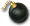
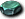

迪諾術士
我們伺服器實際的怪物設定（不是日版 wiki 的資料）。
能力值
| 項目 | 本伺服器 | 日版 wiki |
| 等級 | 120 | 120 |
| HP | 89451～98396 | 89,451 |
| AC | -19 | -7 |
| MC | 6 | -62 |
| AAR | 38 | 57 |
| SAR | 40 | 21 |
| STR | 110 | 180 |
| DEX | 30 | 120 |
| INT | 25 | 125 |
| WIS | 25 | 115 |
| CON | 150 | 91 |
| 經驗值 | 540000 | 66390 |
| 名聲值 | 2660 | 20400 |
| 金錢 | 45000 | 10300 |
| 攻擊屬性 | 隨機 | 隨機 |
| 防禦屬性 | 隨機 | 隨機 |
出現地圖
| 地圖 | 數量 | 出現位置 |
| 塞佩利歐2 | 6～9 | 範圍 (1,1)-(118,118) |
| 塞佩利歐4 | 10～14 | 範圍 (1,1)-(118,118) |
| 塞佩利歐6 | 8～11 | 範圍 (1,1)-(118,118) |
| 塞佩利歐7 | 8～11 | 範圍 (1,1)-(118,118) |
掉落道具
| 道具 | 基本機率 |
 魔法衝擊 | 0.2% |
| 圖林塔艾提斯 | 0.01% |
| 另類鑽擊 | 0.01% |
| 崩壞力場 | 0.01% |
| 靈魂之眼 | 0.01% |
| 忠誠之力 | 0.01% |
| 麥格農之力 | 0.01% |
| 盧瓦德攻勢 | 0.01% |
| 銳利之眼 | 0.01% |
| 無限感知 | 0.01% |
| 隨機一件（Dlc_DC1_EItem03） | 0.02% |
| 隨機一件（Dlc_DC1_EItemGaiter01_F） | 0.04% |
| 隨機一件（Dlc_DC1_EItemRing01_F） | 0.01% |
| 隨機一件（Dlc_DC1_EItemShield01_F） | 0.03% |
| 隨機一件（Dlc_DC1_EItemShield02） | 0.01% |
| 隨機一件（Dlc_DC1_EItemWeapon01） | 0.02% |
| 隨機一件（Dlc_DC1_EItemWeapon02） | 0.01% |
| 隨機一件（Dlc_DC1_UItem06） | 0.57% |
| 隨機一件（Dlc_DC_UItemN01） | 0.3% |
| 秘術赫爾莉克 | 8.6% |
| 秘術瑪娜莉克 | 2.7% |
 石灰石 石灰石 | 0.6% |
 鐵鋼石 | 0.6% |
| 忘卻的幽光護腕 | 0.7% |
基本機率再乘上伺服器的掉寶倍率；「隨機一件」是從一組道具裡抽一件。